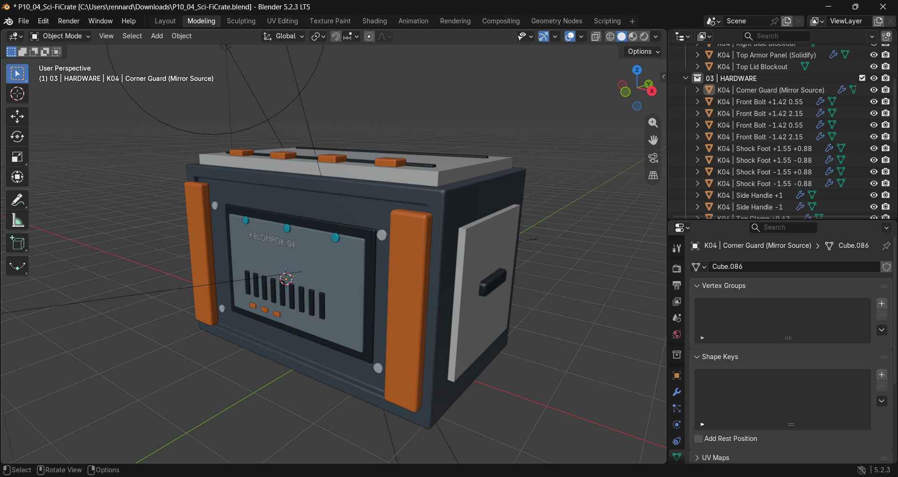
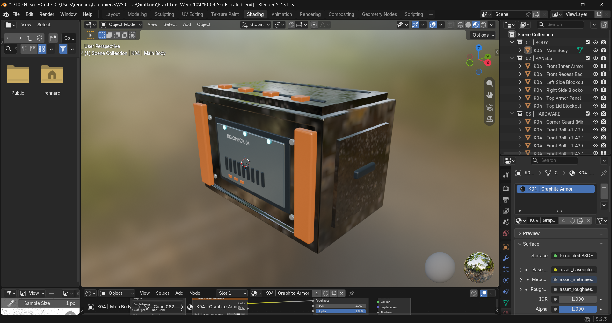
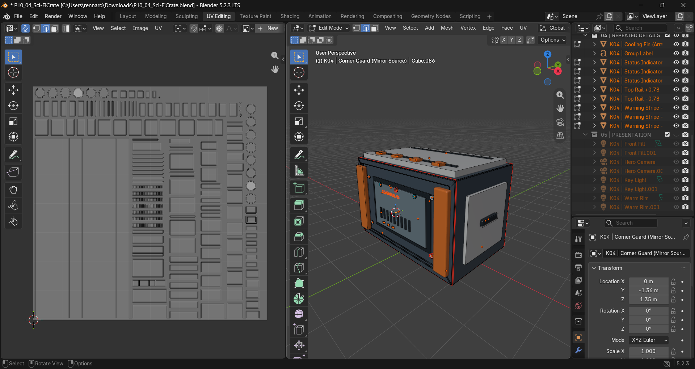

01 / MODEL
Menyiapkan asset
Model Modular Sci-Fi Supply Crate menjadi dasar proses UV mapping dan pemberian material.
GRAFIKA KOMPUTER B / PRAKTIKUM 10
Dokumentasi proses membuka UV, menyiapkan texture map, dan merender Modular Sci-Fi Supply Crate dengan material PBR di Blender.

HASIL AKHIR · BLENDERASSET OVERVIEW
Asset hard-surface ini memadukan bodi industrial, panel pelindung, baut, gagang samping, dan indikator LED. Texture map PBR memberi variasi warna, kekasaran, metalness, normal, serta emission pada permukaan.
Unduh file Blender ↗UV & TEXTURING WORKFLOW

Model Modular Sci-Fi Supply Crate menjadi dasar proses UV mapping dan pemberian material.
.png)
Seam ditempatkan di sudut tajam dan sisi yang tidak langsung terlihat agar sambungan tekstur lebih tersembunyi.

Komponen utama menjadi island besar, sedangkan baut dan gagang menempati island kecil. Island dikemas dengan margin untuk mengurangi texture bleeding.
.png)
Checker texture digunakan untuk melihat distorsi. Seam tambahan dan Unwrap ulang membantu memperbaiki pola yang tertarik.
TEXTURE MAPS
Warna cat oranye dan graphite pada bodi.
Variasi pantulan antara cat bersih dan area lecet.
Membedakan permukaan cat dengan logam terbuka.
Detail ukiran, grill, dan goresan tanpa menambah geometri.
Mask khusus menyalakan indikator status berwarna cyan.
Base Color dan Emission memakai sRGB; map data memakai Non-Color.
Island ditata dengan margin aman untuk mengurangi bleeding.
File tekstur: asset_basecolor.png, asset_roughness.png, asset_metalness.png, asset_normal.png, dan asset_emission.png.
SHADER SETUP
Material utama menghubungkan map warna, roughness, metalness, dan normal.
Slot material terpisah memakai emission mask agar cahaya hanya muncul di area LED.
Material utama diterapkan ke panel yang sebelumnya masih memakai warna bawaan.
UV MAPPING
UV yang rapi menjaga tekstur konsisten pada tiap komponen asset.
Seam mengikuti sudut 90 derajat dan rusuk yang kurang terlihat, termasuk bagian bawah dan belakang panel.
Bodi utama, panel atas, dan armor oranye mendapat island besar agar detail tekstur cukup terbaca.
Baut dan gagang ditempatkan di ruang kosong dengan skala yang sesuai.
Seam tambahan, Unwrap ulang, dan Pack Islands bermargin membantu mengurangi distorsi dan bleeding.
SUBMISSION CHECKLIST
Ringkasan asset, texture map, dan dokumentasi proses.
.blend tersediaCHALLENGE REPORT
AMulti-Material Surface — Asset memakai material Main Body untuk bodi bercat metal dan material Status Indicator untuk LED. Pemisahan ini menunjukkan bahwa satu asset dapat memiliki beberapa karakter permukaan.
DCustom Emission Mask — Emission mask khusus mengatur area indikator cyan yang menyala. Mask memastikan hanya bagian LED yang emissive, tanpa cahaya bocor ke bodi.
ECustom Roughness Variation — Roughness map memberi pantulan berbeda pada area cat bersih dan area lecet atau aus. Variasi permukaan ini dibuat lewat tekstur tanpa mengubah geometri.
FMetal + Painted Surface — Metallic Map membedakan cat oranye dan graphite yang non-metal dari bagian logam terbuka. Kedua karakter surface tetap berada dalam satu material bodi.
GUV Optimization — UV island dirapikan untuk mengurangi ruang kosong yang tidak perlu, menjaga margin aman, dan membuat orientasi mudah dibaca. Skala island diatur agar texel density konsisten; layout menjadi dasar dokumentasi before/after.
HNormal Detail — Normal Map menambahkan detail kecil seperti goresan, alur grill, dan ukiran tanpa menambah poligon. Cara ini lebih efisien untuk detail permukaan halus karena tidak memerlukan geometri tambahan.
LESSONS LEARNED
Indikator dipisahkan ke slot material sendiri dan menggunakan emission mask hitam agar hanya area lampu menyala.
Panel yang belum memiliki tekstur diberi slot material PBR dari object bodi utama menggunakan Link Materials.
Seam tambahan dibuat pada area yang distorsinya tinggi, lalu model di-Unwrap kembali.
PROJECT FILES
File project, dokumentasi, screenshot, dan texture map tersedia bersama halaman ini.